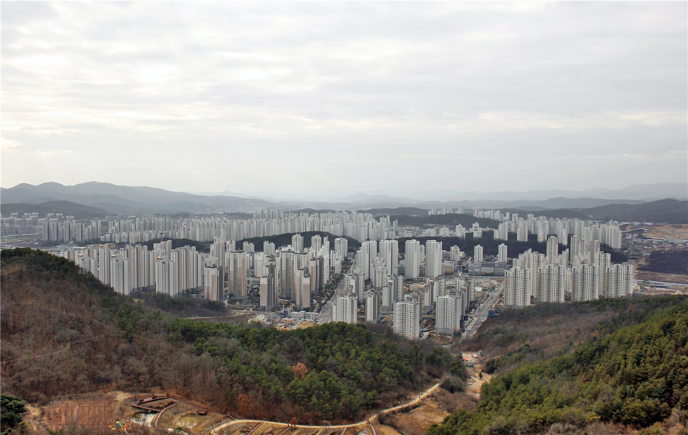

'최고위가 철부지 싸움터로'…장동혁 사퇴론에 매몰된 국민의힘
제1야당 국민의힘이 장동혁 의원의 사퇴론을 둘러싼 내홍에 빠졌다. 당 최고위원회가 갈등의 무대가 되면서 당내 혼란이 이어지고 있다.
전홍발 기자 · 2026.06.19
橋한국

경향신문은 '최고위가 철부지 싸움터로'라는 표현과 함께, 국민의힘이 장동혁 사퇴론에 매몰돼 있다고 전했다. 지도부 내 노선·책임 공방이 당의 동력을 갉아먹고 있다는 진단이다.
광고 문의 · 300×250야당 내홍의 배경
선거와 정국 운영을 둘러싼 책임론은 정당 내부 갈등의 단골 소재다. 지도부의 거취 논쟁이 길어지면 정책 대안 제시 같은 야당 본연의 역할이 뒷전으로 밀린다는 우려가 나온다.
당내에서는 통합과 쇄신을 요구하는 목소리가 크다. 갈등을 조기에 수습하지 못하면 지지층 이탈로 이어질 수 있다는 점에서, 지도부의 정치력이 시험대에 올랐다.
華橋時報는 정당 내부 동향을 특정 인물의 편이 아니라 정치의 기능이라는 관점에서 본다. 갈등의 경위를 사실대로 정리해 전한다.
출처·참고 (사실 확인용 — 본문은 직접 재작성)
· 경향신문 2026.06.18 ''최고위가 철부지 싸움터로' 장동혁 사퇴론에 매몰된 국힘'
· 경향신문 2026.06.18 ''최고위가 철부지 싸움터로' 장동혁 사퇴론에 매몰된 국힘'